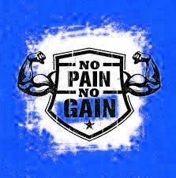

GENERE TON PROGRAMME SPORTIF
AccueilMuscuA lireChallenge du mois !
Les programmes pour le dos/les triceps se font sans élastiques ni barres de traction.
Les programmes pour les épaules/les jambes se font sans élastiques ni barres de dips/traction.
les programmes pour les biceps se font sans élastiques ni barres de dips.
Enfin, les programmes pour abdos se font uniquement sans matériel.